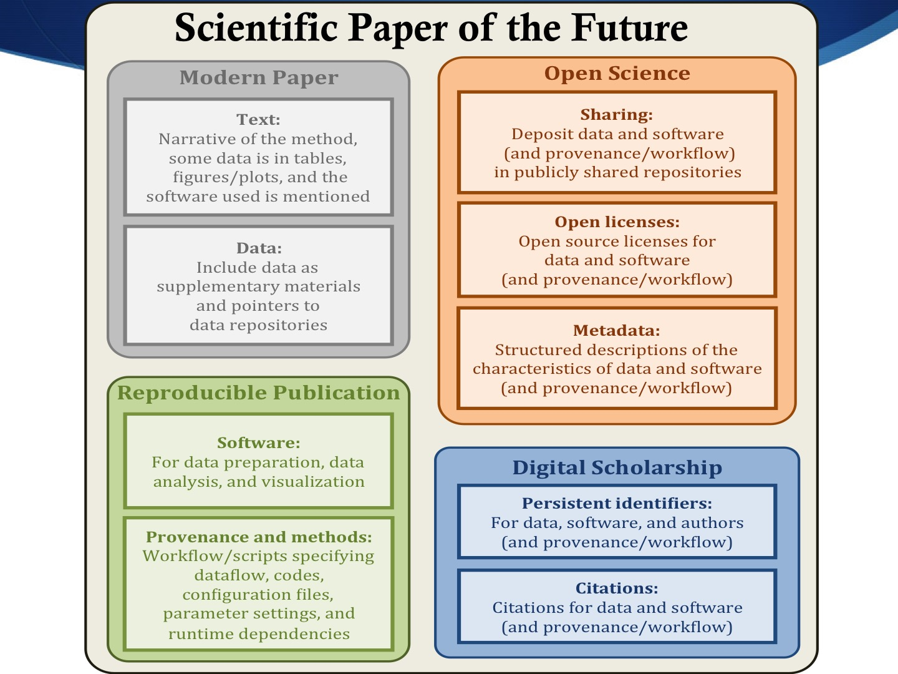

A GPF aims to satisfy the following requirements:
This is a schematic of the key aspects of geoscience papers of the future:

A Geoscience Paper of the Future (GPF) includes data, software and provenance as expected in reproducible publications, but also includes desirable features in open science and digital scholarship: 1) sharing of data, software, and other research products in public repositories, 2) use of open licenses, 3) metadata that describes the characteristics of data, software, and other research products, 4) persistent unique identifiers for data, software, and other research products, and 5) citations for all digital resources mentioned in the paper.
GPF authors may find practical impediments to follow some of these recommendations, and in that case they should state their desire to do so and document the reasons for not following them. Common challenges include the reluctance by co-authors for sharing specific data or software, the difficulty to fully describe their experiments, the inability to share due to technological limitations (size, dependencies, existing repositories, infrastucture, etc.), and the necessity to simplify the approach for broad use (i.e. generating figures with easier formatting than generally used in published form). When faced with such challenges, GPF authors should reflect on the difficulties they may face, pursue workarounds, and propose areas for future improvements.